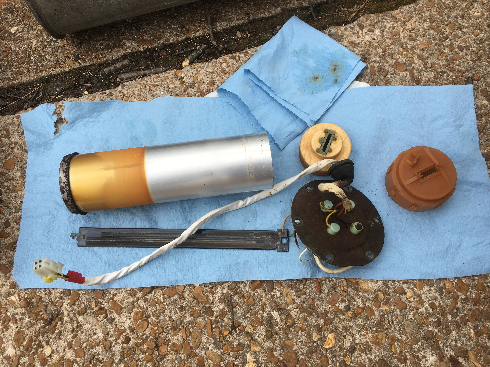
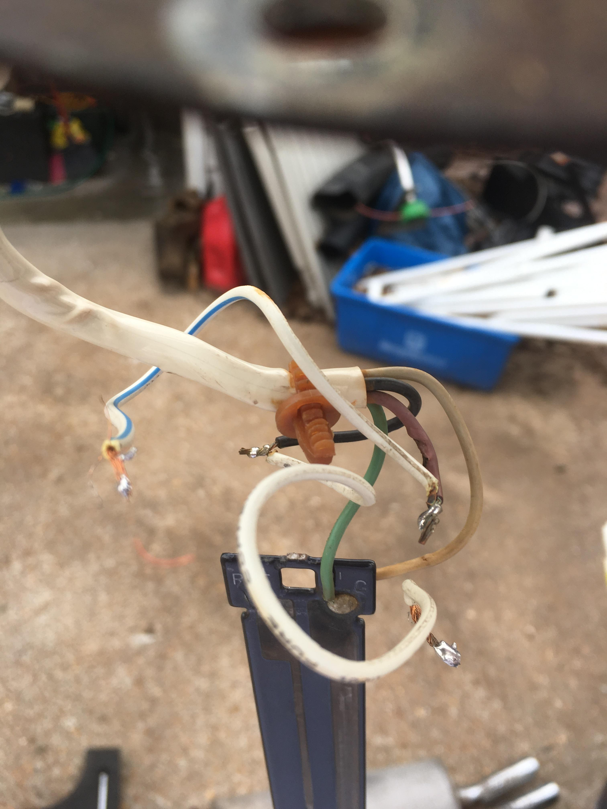
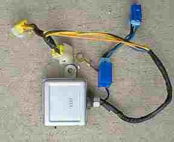

-
I recently acquired a 1986 Turbo GLL that has some issues, one of them being a faulty fuel level sender. The previous owner indicated that the sender itself had a loose connection or something, and that it could probably be soldered.
Rather than mess around with trying to repair the sender (which I suspect is the original factory cylindrical design, not the updated swing-arm float design), I decided to look for an OEM replacement.
I attempted to order the updated design for digital dash units, only to discover that not a single one exists in any Nissan dealer inventory nationwide. Bummer. I haven't yet attempted to order the original factory part number, but I'd sooner repair my existing unit than order a brand new unit that is likely to fail within a few years. It appears that the "analog dash" version of the updated sender is still available, though.
In the part catalog diagram for the GLL, there is a part number for an adapter box (the silver box that plugs in between the sender and the harness). From my research online, it appears that this box takes the analog signal from the sender and converts it into a signal that the digital dash can interpret. My suspicion is that the only difference between the updated "analog dash" sender and the updated "digital dash" sender is that the digital version comes with this converter box, and that the in-tank sensor is identical between the two. Unfortunately, this adapter box is no longer available from Nissan, either. I suspect that this is the reason why the "digital dash" fuel sender is no longer available - the digital dash sender is probably just the analog sender packaged with one of these adapter boxes, and the adapter boxes weren't in production nearly as long as the analog fuel senders (which were probably used in other car models well into the 90s).
My theory is that, if I could find a working adapter box, I could order in an "analog dash" fuel sender of the updated design, and the adapter box would convert the analog signal to the signal the digital dash is expecting. Of course, finding a working used adapter box might prove difficult.
But then I got to thinking: that signal converter can't be all that complicated. If I could just figure out what signal the digital dash is expecting, I could design a replacement converter box that anyone could use to translate analog fuel sender signals (or even universal fuel level sender signals) to digital dash signals.
Does anyone know what type of signal the digital dash is expecting from the fuel sender? Is it just a level-shifted analog signal, or is it expecting PWM or something?Last edited by dafunkmonster; 02-18-2017, 02:34 PM. -
Great question.
An earlier thread pretty much surmised the same thing. The level sensor is the same between the analog dash and digital dash kit, one just comes with the A2D box and one does not. I've not seen a thread before though where someone has put an oscilloscope on the output of the converter and characterized it.
However, there are plenty of other electrical assemblies on these cars that suffer from failed solder joints and one of my first troubleshooting steps would be to crack that box open and touch up all the solder joints. Dried up capacitors are another failure mechanism and if there is any of those in there (it's been awhile since i looked in one) it might be worth it to update them with newer parts.
I would guess someone familiar with the Arduino and programming code could create a converter, but i'm not that someone.
84 AE/Shiro #683/Shiro #820/84 Turbo -
So, I finally got around to pulling the fuel level sender out of the tank. This was still plugged into the harness, so I'm glad that none of these leads shorted out on each other. This was basically a gas bomb waiting to go off. Sure, it would have required running the tank mostly empty in order to get the right fuel/air mix inside the tank, but its still a damned scary situation.
The contacts are all corroded, and the potentiometers are worn out, so I don't think its worth trying to repair it.


If this fuel level sender is original to the car (and I have no reason to doubt that it is - the top plate and bolts are just as rusted as the tank), then it appears that the digital dash is still getting an analog signal from the fuel level sender. The only components inside this thing are the float, the potentiometers on the shaft, the wiring, and case. I suspect that its just a different voltage range than the analog dash receives. The digital dash probably requires a 0-5V signal or something where the analog dash requires a 0-12V signal, and the resistance values of the digital fuel level sender are modified to send a reduced voltage to the dash.
I could try and create a map of all the different resistance values and figure out how the signals relate to fuel levels, but I think it might be easier to just reverse engineer one of the converter boxes. If it is really just a level converter, it should be super easy to build an exact replacement. -
Since the analog float-arm fuel level senders are still available, I ordered one in. I got the genuine Nissan part, but there's a ton of aftermarket float-arm fuel senders available - unfortunately, they're for analog dash only.
The adapter box is apparently very difficult to find. So far, I've only seen one on ebay, and it had been sold a week prior.
My next plan of attack is to figure out how fuel levels map to resistance values on the digital version versus the analog version. If somebody has a working sender for a GLL (without the adapter box) and would be willing to help me out by recording some resistance values for me, that would be awesome.
Once I have a table of resistance values for each version of the sender, I should be able to reverse engineer the function of the adapter box. My suspicion is that its just a resistor network that shifts 0-12V signals down to some range that the digital dash can read.
Alternatively, if somebody has an adapter box that they'd be willing to either A. let me borrow, or B. disassemble and take pictures of the innards, that would also be awesome.
-
Alex Millward (Banned on here) is working on this very study. He might be worth contacting on Facebook. -
I've taken some pictures of the box from mine. It should be noted that my gauge does not work properly but I suspect it's the float and not this converter box. It goes down far too quickly and "Empty" is only about 7 gallons from full.Originally posted by dafunkmonster View Post
I do have another sending unit that I could take readings off of if you'd like but I have no way of knowing if it is good or bad.
http://imgur.com/a/CjV9w
Hope this helps! I'd really like to be able to order the analog sending unit and keep using my converter box so I can have a working gauge again! -
Looks like that Hitachi HA1813 is a voltage comparator. NLA with no interchange
HA1813.JPG
This was clipped from a line catalog from 1981
https://archive.org/details/bitsaver…puter_14828946
84 AE/Shiro #683/Shiro #820/84 Turbo -
Have you looked over at nissanpartsdeal.com to see if they have that part? they seem to have a lot of parts that courtesy Nissan doesn't carry anymore. just a thought.
Bon -
I had not seen that site in my searches for the part number but I just put in an order for one there, hopefully they actually have it. Thanks very much!Originally posted by bonfire79 View Post -
Gas Gauge Sending Unit Fuel Pressure Adapter
This plugs inline with the GGSU above & is bolted to the gas tank floor pan -
i started using them instead of courtesy nissan just because the ease of the site, the diagrams, and parts availability. plus, they ship to military APO, which is good for meOriginally posted by DraycosDrasilova View Post
one option they have is you can check availability of any part. if it says "limited availability", just send them an email with that part number, or just follow the part link, and they will respond to you in a day or two and say if they can get it from Japan. you will know for sure.
also, like whats already been stated, check 300zxpartsforyou.com give Steve a call, he has it for 45 bucks. and besides he needs our buisiness. i just got a turbo ECU from him yesterday.
glad to be of help.
BonLast edited by bonfire79; 03-23-2017, 01:40 PM. -
Unfortunately they didn't have it/can't get it either; they emailed me back just now.Originally posted by bonfire79 View Post
I didn't think of contacting Steve for one (though I have bought from him before, great guy) as I thought he only dealt with used parts. I'll check his site when I get back home, it usually makes my phone have a cow. -
yeah, I just talked with him tonight about an idle control valve that I need. his stuff is used, but he pulls and inspects everything himself. he won't sell you a bad part, trust me. and he has your part… I saw it on there. ask him to make sure its in stock. he takes CC numbers over the phone with me, or you can do the pay pal thing. hope he can get you what you need. I'm actually amazed at the amount of hard to find parts I was able to get from partsdeal.... and Steve is pretty much my go-to guy for everything used that I can't find anywhere else. Tell him you mentioned my name, Ben from the UAE.
Bon -
Apparently, my email notifications are getting sent to the spam folder or something, because I didn't see any for these replies.
Nissan parts deal is my go-to place for parts online. They didn't have any of these adapter boxes in stock. I tried a bunch of different places, including some Ebay sellers who specialized in salvaged Nissan parts. Nobody had them. I managed to find one guy who had a salvaged cylinder-type fuel level sender for a GLL, so I bought that just to get an idea of how the thing works.
Since NOS of these adapter boxes has been apparently exhausted (or if it hasn't, its close), I decided to continue pursuing the reverse-engineering. I have a prototype for a replacement almost ready - I just need to do some tweaks and then spend an afternoon calibrating. It's going to be an arduino-based unit with some external DACs. I decided to go this route because it makes it easy to calibrate. I can translate any analog input voltage to any analog output voltage, so in theory, this box could be used to translate ANY fuel level sender (even a universal one) to something the digital dash can understand.
Thanks, Draycos! Your picture confirms what I suspected - the factory adapter box is doing the conversion with a BJT and a comparator. (To answer your question: Yes, You should be able to order a brand new analog float-arm sender and it should work fine with your adapter box.)
The following is what I discovered, for posterity's sake.
The digital dash fuel level sender (for GLL) basically sends three different signals. It has 4 wires: B - black (ground), Y - yellow (full-range signal), YG - yellow with green stripe (quarter-tank signal), and R - red (empty signal). When left open, Y and YG both read 5.1V, and R reads around 10V.
At full tank, the digital sender pulls Y and YG to ground and R is left open.
At half tank, Y shows a resistance to ground of a couple hundred ohms or so, and YG is still essentially a short to ground. R is still open.
At a quarter tank, the resistance from YG to ground starts to rise. R is still open
At empty tank, Y and YG show resistances to ground of 1.2Kohm and 500ohm respectively, and R gets pulled to ground.
Essentially, for the digital dash, both pots run from low resistance to high resistance as you go from full tank to empty tank. In other words, they go from ~0V at full to ~5V at empty.
The float-arm analog fuel level sender operates similarly, except that one of the signals goes from a high resistance at full to a low resistance at empty (high voltage at full to low voltage at empty). It also has a float switch to signal when the tank is empty. The maximum resistance of each pot is also an order of magnitude lower than that of the digital fuel level sender.
The adapter box appears to borrow the voltage from R to power its circuitry. When R gets pulled to ground at the point where the tank is empty, this essentially leaves Y and YG at open circuit, which confirms the "empty" state.
Rather than do all the math of trying to figure out how to translate these signals using transistor logic, I decided to go with a microcontroller-based approach. I'm essentially translating the resistance of the pots on the analog sender into voltages that I output to the harness. I'm also piggybacking off of the 10V R line for power, but my adapter will probably pull even less current than the Nissan adapter box.
So far, I've created a rough map of how voltages translate to fuel levels on the digital dash. What I need to do now is map out how actual fuel levels map to resistance values with the analog sender, and to do that, I need to have the analog sender in the tank (and be able to reliably measure how much fuel I've put into it). It will be a tedious process, but once I'm done doing that, I should be able to create the final lookup table and have a 100% working prototype.

Copyright © 2006–. All rights reserved. Privacy Policy